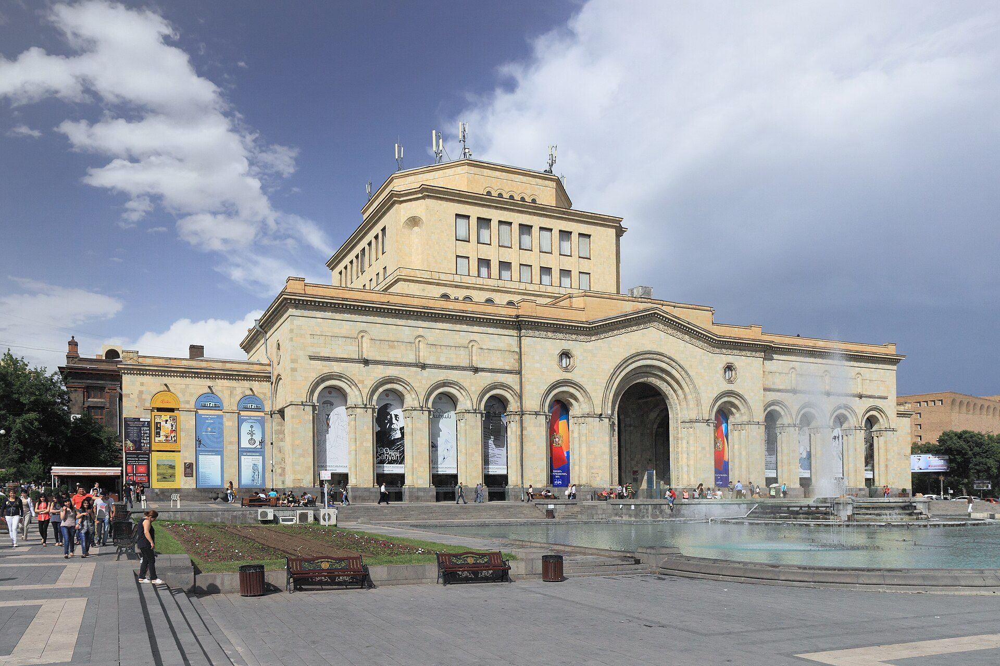
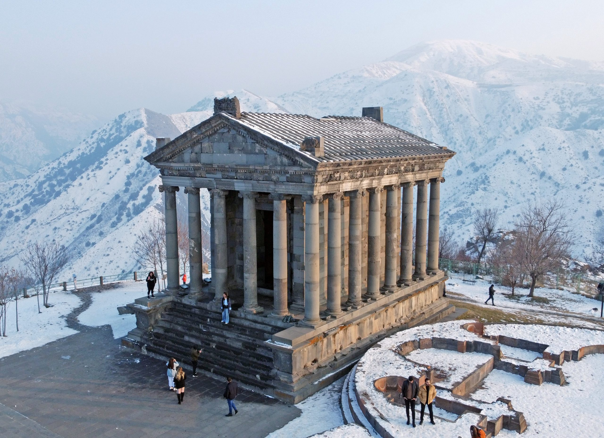
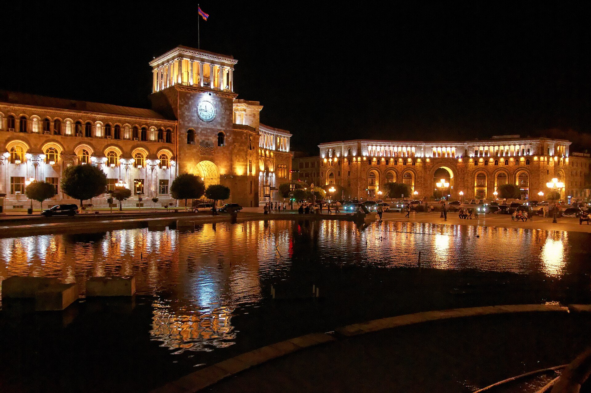
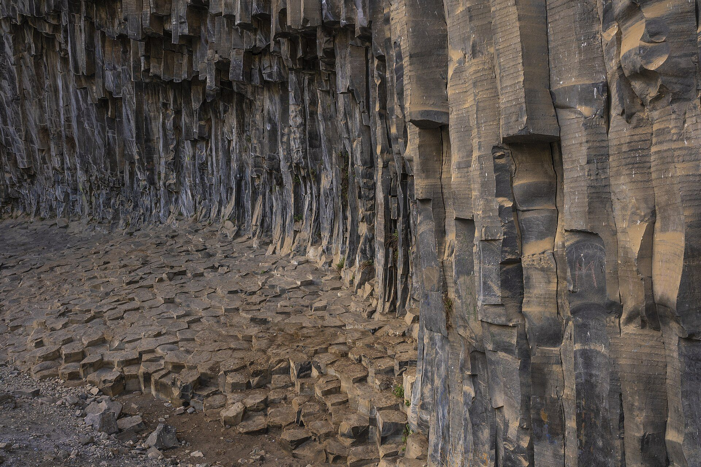

Itinerary
Arrival in Yerevan
Meeting at Zvartnots International Airport and transfer to your hotel in central Yerevan. Check-in and rest after the flight. If you still have energy, take a slow first walk through the evening city of pink tuff stone.

Yerevan: history, brandy & carpets
Your introduction to Armenia begins at the History Museum on Republic Square: from prehistoric finds and the treasures of the Urartian kingdom to the Middle Ages and modern times — millennia of Armenian history in one morning. Next comes the Yerevan Ararat Brandy Factory: historic cellars where brandy ages in oak barrels, the story of how Armenian brandy became world-famous, and a tasting. In the afternoon, visit Megerian Carpet, where hand-made carpets are woven and restored using traditional techniques and yarn is coloured with natural dyes. Free evening for a stroll along the Cascade and Northern Avenue.
Dinner is optional, on request, and is not included in the tour price.



Etchmiadzin, Machanents & Voskevaz
In the morning, travel to Vagharshapat and Etchmiadzin Cathedral, one of the oldest Christian churches in the world and the spiritual centre of the Armenian Apostolic Church. Then a tour of the Machanents house — a warm family home where you will hear about traditional Armenian life and taste home-made dishes. In the afternoon, Voskevaz winery, housed in a building styled as a medieval fortress: a cellar tour and a tasting of wines from Armenian grape varieties. In the evening, the village of Ohanavan on the edge of the Kasakh gorge, next to Ohanavank monastery.
Dinner in Ohanavan is optional, on request, and is not included in the tour price.


Garni, Geghard & Lake Sevan
The 1st-century pagan Temple of Garni — the only surviving Greco-Roman temple in Armenia — stands above the Azat river gorge. Down in the gorge lies the Symphony of Stones: giant basalt columns that look like organ pipes. Next is the Geghard monastery complex, partly carved right into the rock and listed by UNESCO. In the afternoon, Lake Sevan, the "blue pearl" of Armenia, and Sevanavank monastery on its peninsula with panoramic views of the lake and mountains.
Dinner on the shore of Lake Sevan is optional, on request, and is not included in the tour price.


MyLer Mountain — extreme & sport
A day of active fun at the MyLer Mountain resort with views of Mount Aragats: skiing and snowboarding on slopes of different levels, fresh mountain air and plenty of adrenaline. It suits experienced riders and first-timers alike — and those who don't ski can simply enjoy the mountain scenery.
Equipment rental and an instructor are optional and paid separately. Skiing depends on snow and weather conditions.
Departure
Check-out and transfer to Zvartnots International Airport. Have a safe trip — and see you again in Armenia!